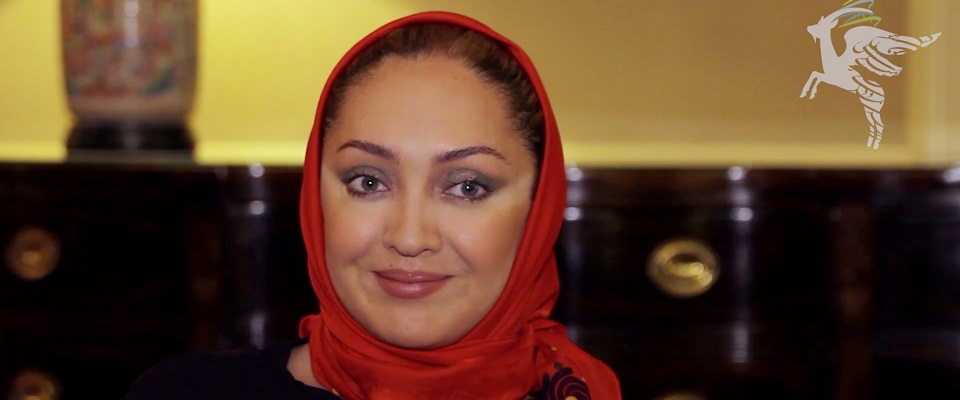
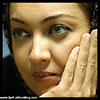

Niki Karimi was born and raised in Tehran, Iran. She has been active in theater since elementary school, and has said that her early interest in film and literature inspired her to become an actress. Karimi has won many awards nationally and internationally for "Sara" such as San Sebastian film festival award for best actress.[2] She has also recently been on the jury for more than 20 renowned film festivals, including Karlovy Vary Film Festival, the Edinburgh International Film Festival, the Locarno International Film Festival and Thessaloniki International Film Festival and Berlin Film Festival and also the 60th Cannes Film Festival. She was assistant of Abbas Kiarostami from 1992 to 2007. 